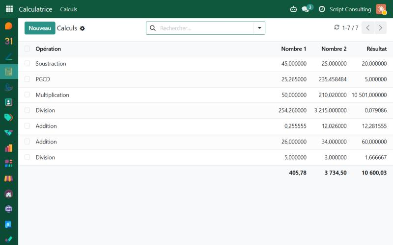
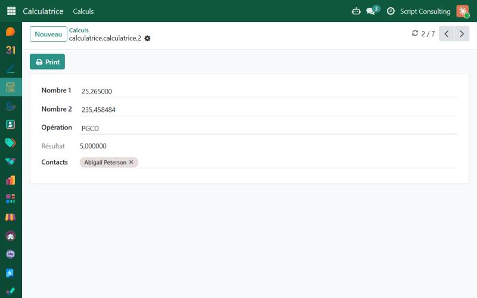

A simple and friendly calculator inside Odoo: two numbers, six operations, a stored result, links to your contacts and a printable report.
Odoo 19.0 · Training module · LGPL-3

Addition, subtraction, multiplication, division, modulo and GCD, on numbers with up to 6 decimals. Division and modulo by zero are handled safely.
The result is computed and stored as soon as you change a number or the operation. Totals are shown at the bottom of the list.
Type a number in the search bar to find every calculation where it appears as number 1, number 2 or result.
Attach each calculation to one or several contacts. A Calculations smart button on the contact form counts them and opens the matching list.

The Print button of a calculation produces a clean PDF report: the numbers, the operation, the full expression, the result and the list of linked contacts with their email and phone.
Une calculatrice simple et conviviale dans Odoo : deux nombres, six opérations, un résultat enregistré, des liens vers vos contacts et un rapport imprimable.
Script Consulting · github.com/MaxTemat/Odoo-Calculatrice